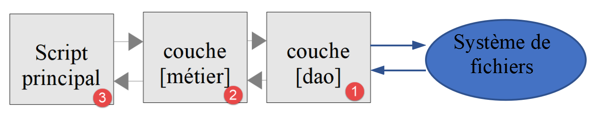
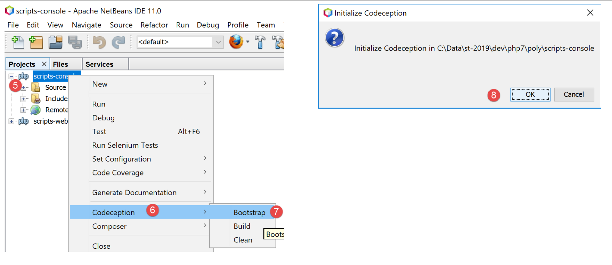

11. تمرين تطبيقي – الإصدار 4
سيتم تنفيذ تطبيق حساب الضرائب وفقًا للهيكل الطبقي التالي:

سنستعيد عناصر النسخة 3 من الفقرة «الرابط» مع تعديلها لتتناسب مع البنية الجديدة للتطبيق. يُطلق على هذه العملية أحيانًا اسم «إعادة الهيكلة» (refactoring). نفترض هنا أن البيانات اللازمة للتطبيق موجودة في ملفات نصية. وستتولى الطبقة [Dao] عملية التبادل مع هذه الملفات.
11.1. هيكل النصوص البرمجية

11.2. الكائنات المتبادلة بين الطبقات
سنحتفظ ببعض الكائنات من الإصدار 3. نعيد ذكرها هنا للتذكير.
الاستثناء [ExceptionImpots] هو الاستثناء الذي ستطلقه الطبقة [Dao] عندما تواجه مشكلة سواء في الوصول إلى البيانات أو في طبيعة البيانات (بيانات غير صحيحة).
<?php
// مساحة الأسماء
namespace Application;
class ExceptionImpots extends \RuntimeException {
public function __construct(string $message, int $code=0) {
parent::__construct($message, $code);
}
}
تجمع فئة [Utilitaires] طرقًا مفيدة لإدارة الملفات النصية (هنا طريقة واحدة):
<?php
// مساحة الأسماء
namespace Application;
// فئة من الدوال المساعدة
abstract class Utilitaires {
public static function cutNewLinechar(string $ligne): string {
// يتم حذف علامة نهاية السطر من $ligne إن وجدت
$longueur = strlen($ligne); // طول السطر
while (substr($ligne, $longueur - 1, 1) == "\n" or substr($ligne, $longueur - 1, 1) == "\r") {
$ligne = substr($ligne, 0, $longueur - 1);
$longueur--;
}
// النهاية - إعادة السطر
return($ligne);
}
}
الفئة [TaxAdminData] هي الفئة التي تغلف بيانات إدارة الضرائب:
<?php
namespace Application;
class TaxAdminData {
// شرائح الضريبة
private $limites;
private $coeffR;
private $coeffN;
// ثوابت حساب الضريبة
private $plafondQfDemiPart;
private $plafondRevenusCelibatairePourReduction;
private $plafondRevenusCouplePourReduction;
private $valeurReducDemiPart;
private $plafondDecoteCelibataire;
private $plafondDecoteCouple;
private $plafondImpotCouplePourDecote;
private $plafondImpotCelibatairePourDecote;
private $abattementDixPourcentMax;
private $abattementDixPourcentMin;
// التهيئة
public function setFromJsonFile(string $taxAdminDataFilename): TaxAdminData {
// استرداد محتوى ملف البيانات الضريبية
$fileContents = \file_get_contents($taxAdminDataFilename);
…
// يتم إرجاع الكائن
return $this;
}
private function check($value): \stdClass {
…
return $result;
}
// toString
public function __toString() {
// سلسلة Json للكائن
return \json_encode(\get_object_vars($this), JSON_UNESCAPED_UNICODE);
}
// دالات الاسترجاع والتعيين
public function getLimites() {
return $this->limites;
}
…
public function setLimites($limites) {
$this->limites = $limites;
return $this;
}
…
}
نضيف فئة جديدة [TaxPayerData] التي تغلف البيانات المكتوبة في ملف النتائج:
<?php
// مساحة الأسماء
namespace Application;
// فئة البيانات
class TaxPayerData {
// البيانات اللازمة لحساب ضريبة المكلف
private $marié;
private $enfants;
private $salaire;
// نتائج حساب الضريبة
private $montant;
private $surcôte;
private $décôte;
private $réduction;
private $taux;
// أداة الضبط
public function setFromParameters(string $marié, int $nbEnfants, int $salaireAnnuel) : TaxPayerData{
// بيانات المكلف اللازمة لحساب الضريبة
$this->marié = $marié;
$this->enfants = $nbEnfants;
$this->salaire = $salaireAnnuel;
// يتم تهيئة الكائن
return $this;
}
// أدوات الاسترجاع والتعيين
public function getMarié() {
return $this->marié;
}
…
public function setMarié($marié) {
$this->marié = $marié;
return $this;
}
…
// toString
public function __toString() {
// سلسلة Json للكائن
return \json_encode(\get_object_vars($this), JSON_UNESCAPED_UNICODE);
}
}
ملاحظة: استخدم ميزة التوليد التلقائي للكود لإنشاء المنشئ ووظائف الحصول على القيم (getters) وتعيين القيم (setters) (انظر الفقرة المرتبطة). لاحظ أن وظائف تعيين القيم (setters) هي «متدفقة».
11.3. الطبقة [dao]
نحن مهتمون هنا بطبقة [1] في تطبيقنا:

11.3.1. واجهة [InterfaceDao]
ستكون واجهة الطبقة [dao] كما يلي [InterfaceDao.php]:
<?php
// مساحة الأسماء
namespace Application;
interface InterfaceDao {
// قراءة بيانات دافعي الضرائب
public function getTaxPayersData(string $taxPayersFilename, string $errorsFilename): array;
// قراءة بيانات إدارة الضرائب (شرائح الضرائب)
public function getTaxAdminData(): TaxAdminData;
// تسجيل النتائج
public function saveResults(string $resultsFilename, array $taxPayersData): void;
}
تعليقات
- المواصفات الفنية هي كما يلي:
- توجد بيانات دافعي الضرائب في ملف نصي؛
- يتم تسجيل نتائج حساب الضرائب في ملف نصي؛
- يتم تسجيل الأخطاء المحتملة في ملف نصي؛
- لا يُعرف الشكل الذي تتوفر به بيانات مصلحة الضرائب. لكل شكل جديد، يجب تنفيذ واجهة [InterfaceDao] بواسطة فئة جديدة؛
- يجب أن تطلق طرق الواجهة التي تواجه خطأً لا يمكن استرداده عند الوصول إلى البيانات استثناءً من النوع [ExceptionImpots]؛
- السطر 9: الطريقة التي تسمح بالحصول على بيانات المكلف [statut marital, nombre d’enfants, salaire annuel]؛
- المعلمة الأولى هي اسم الملف النصي الذي توجد فيه هذه البيانات؛
- المعلمة الثانية هي اسم الملف النصي الذي يتم فيه تسجيل الأخطاء المحتملة التي تمت مواجهتها؛
- السطر 12: الطريقة التي تسمح بالحصول على بيانات مصلحة الضرائب. لا يتم تمرير أي معلمة إليها هنا لأننا لا نعرف كيف يتم تخزينها؛
- السطر 15: الطريقة التي تسمح بتسجيل نتائج حساب الضريبة في ملف نصي يتم تمرير اسمه كمعلمة؛
عند كتابة الواجهة [InterfaceDao]، نعلم أنه ستكون هناك طرق مختلفة لكتابة الطريقة [getTaxAdminData] وفقًا للطريقة التي سيتم بها تخزين بيانات مصلحة الضرائب. وبالتالي، سيتم تنفيذ الواجهة [InterfaceDao] بواسطة فئات مختلفة، تتولى كل منها طريقة تخزين معينة لهذه البيانات (جداول، ملفات نصية، قاعدة بيانات، خدمة ويب). ومع ذلك، ستشترك هذه الفئات المشتقة في كود مشترك، وهو كود تنفيذ الطرق [getTaxPayersData, saveResults]. من المعروف أن حالة الاستخدام هذه يمكن تنفيذها بطريقتين (انظر الفقرة «الرابط»):
- يتم إنشاء فئة مجردة C تجمع الكود المشترك بين الفئات المشتقة. تقوم الفئة C بتنفيذ الواجهة I، لكن بعض الطرق التي يجب إعلانها في الفئات المشتقة تكون مُعلنة في الفئة C على أنها مجردة، وبالتالي فإن الفئة C نفسها تكون مجردة. ثم ننشئ فئتين C1 و C2 مشتقتين من C، كل منهما تنفذ بطريقتها الخاصة الطرق غير المحددة (المجردة) لفئتها الأم C؛
- نُنشئ سمة T شبه مطابقة للفئة المجردة C في الحل السابق. هذه السمة لا تُنفذ الواجهة I لأنها لا تستطيع ذلك من الناحية النحوية. ثم ننشئ فئتين C1 و C2 اللتين تنفذان الواجهة I وتستخدمان السمة T. ولم يتبق لهذه الفئات سوى تنفيذ أساليب الواجهة I التي لم تنفذها السمة T التي تستوردها؛
في هذا المثال، سنستخدم السمة [TraitDao].
11.3.2. السمة [TraitDao]
رمز السمة [TraitDao] هو التالي [TraitDao.php]:
<?php
// مساحة الأسماء
namespace Application;
trait TraitDao {
// قراءة بيانات دافعي الضرائب
public function getTaxPayersData(string $taxPayersFilename, string $errorsFilename): array {
// جدول بيانات المكلفين
$taxPayersData = [];
// جدول الأخطاء
$errors = [];
// قد تحدث أخطاء عديدة عند إدارة الملفات
try {
// قراءة بيانات المستخدم
// كل سطر يتكون من الحالة الاجتماعية، وعدد الأطفال، والراتب السنوي
$taxPayersFile = fopen($taxPayersFilename, "r");
if (!$taxPayersFile) {
throw new ExceptionImpots("Impossible d'ouvrir en lecture les déclarations des contribuables [$taxPayersFilename]", 12);
}
// يتم معالجة السطر الحالي من ملف بيانات المستخدم
// الذي يتخذ الشكل التالي: الحالة الاجتماعية، عدد الأبناء، الراتب السنوي
$num = 1; // رقم السطر الحالي
$nbErreurs = 0; // عدد الأخطاء التي تمت ملاحظتها
while ($ligne = fgets($taxPayersFile, 100)) {
// يتم تجاهل الأسطر الفارغة
$ligne = trim($ligne);
if (strlen($ligne) == 0) {
// السطر التالي
$num++;
// نعود إلى البداية
continue;
}
// إزالة علامة نهاية السطر إن وجدت
$ligne = Utilitaires::cutNewLineChar($ligne);
// استرجاع الحقول الثلاثة marié:enfants:salaire التي تشكل $ligne
list($marié, $enfants, $salaire) = explode(",", $ligne);
// يتم التحقق منها
// يجب أن يكون الحالة الاجتماعية نعم أو لا
$marié = trim(strtolower($marié));
$erreur = ($marié !== "oui" and $marié !== "non");
if (!$erreur) {
// يجب أن يكون عدد الأطفال عددًا صحيحًا
$enfants = trim($enfants);
if (!preg_match("/^\d+$/", $enfants)) {
$erreur = TRUE;
} else {
$enfants = (int) $enfants;
}
}
if (!$erreur) {
// الراتب عدد صحيح بدون سنتات اليورو
$salaire = trim($salaire);
if (!preg_match("/^\d+$/", $salaire)) {
$erreur = TRUE;
} else {
$salaire = (int) $salaire;
}
}
// هل هناك خطأ؟
if ($erreur) {
$errors[] = "la ligne [$num] du fichier [$taxPayersFilename] est erronée";
$nbErreurs++;
} else {
// يتم حفظ المعلومات
$taxPayersData[] = (new TaxPayerData())->setFromParameters($marié, $enfants, $salaire);
}
// السطر التالي
$num++;
}
// هل وصلنا إلى نهاية الملف؟
if (!feof($taxPayersFile)) {
// خرجنا من الحلقة بسبب خطأ في القراءة
throw new ExceptionImpots("Erreur lors de la lecture de la ligne n° [$num] du fichier [$taxPayersFilename]");
} else {
// تم الخروج من الحلقة عند علامة نهاية الملف
// يتم حفظ الأخطاء في ملف نصي
$this->saveString($errorsFilename, implode("\n", $errors));
// نتيجة الدالة
return $taxPayersData;
}
} finally {
// يتم إغلاق الملف إذا كان مفتوحًا
if ($taxPayersFile) {
fclose($taxPayersFile);
}
}
}
// تسجيل النتائج
public function saveResults(string $resultsFilename, array $taxPayersData): void {
// تسجيل الجدول [$taxPayersData] في الملف النصي [$resultsFileName]
// إذا لم يكن الملف النصي [$resultsFileName] موجودًا، يتم إنشاؤه
$this->saveString($resultsFilename, implode("\n", $taxPayersData));
}
// تسجيل نتائج جدول في ملف نصي
private function saveString(string $fileName, string $data): void {
// تسجيل الجدول [$data] في الملف النصي [$fileName]
// إذا لم يكن الملف النصي [$fileName] موجودًا، فسيتم إنشاؤه
if (file_put_contents($fileName, $data) === FALSE) {
throw new ExceptionImpots("Erreur lors de l'enregistrement de données dans le fichier texte [$fileName]");
}
}
}
تعليقات
- السطر 6: نُعرِّف هنا سمةً وليس فئةً؛
- الأسطر 9-89: تُنفذ الطريقة [getTaxPayersData] الطريقة التي تحمل الاسم نفسه في الواجهة [InterfaceDao]. وهي تستخرج بيانات دافعي الضرائب [statut marital, nombre d’enfants, salaire annuel] إلى ملف نصي باسم [$taxPayersFilename]. وتعرض هذه البيانات في شكل جدول [$taxPayersData] يتألف من عناصر من النوع [TaxPayerData] (السطران 67 و81)؛
- تشبه الطريقة [getTaxPayersData] إلى حد كبير الطريقة [AbstractBaseImpots::executeBatchImpots] الموصوفة في الفقرة «الرابط»، مع الاختلافات التالية:
- تقوم الطريقة [getTaxPayersData] فقط باسترداد بيانات دافعي الضرائب. وهي لا تقوم بحساب الضريبة. هنا، هذا هو دور الطبقة [métier]؛
- وكما كانت تفعل الطريقة [executeBatchImpots]، فإنها تُبلغ عن الأخطاء. وهنا يتم تخزين الأخطاء أولاً في مصفوفة [$errors] (السطر 13)، وهي مصفوفة يتم تخزينها في ملف نصي في نهاية المعالجة (السطر 79). وقد تكون فارغة أو غير فارغة حسب الحالة؛
- في حالة وجود خطأ لا يمكن إصلاحه، يتم إطلاق استثناء من النوع [ExceptionImpots] (السطران 20 و75)؛
- السطر 73: تجدر الإشارة إلى المعالجة التي تتم عند الخروج من حلقة الأسطر 26-71. في الواقع، تعاني الدالة [fgets] من عيب يتمثل في إرجاع القيمة المنطقية FALSE سواء عند وصول عملية قراءة الأسطر إلى علامة نهاية الملف أو في حالة فشل هذه القراءة بسبب خطأ ما. وللتمييز بين الحالتين، يتم اختبار ما إذا كنا قد وصلنا إلى نهاية الملف باستخدام الدالة [feof]. وإذا لم نكن قد وصلنا إلى نهاية الملف، فهذا يعني أن خطأً قد حدث، وعندها يتم إثارة استثناء؛
- الأسطر 83-88: يتم تنفيذ [finally] سواء حدثت استثناءات أم لا أثناء معالجة الملف؛
- السطر 85: إذا تم فتح الملف، فإن "مقبض" الملف [$taxPayersFile] يكون له القيمة المنطقية TRUE، وإلا يكون له القيمة المنطقية FALSE؛
- الأسطر 99-105: تُستخدم الطريقة الخاصة [saveString] المذكورة في السطر 79 لتسجيل مصفوفة الأخطاء في ملف نصي؛
- السطر 99: تتلقى الطريقة [saveString] معلمتين:
- [string $filename] وهو اسم الملف النصي المستخدم لتسجيل البيانات؛
- [string $data] وهي سلسلة الأحرف المراد تسجيلها في الملف النصي. وستكون هذه السلسلة عبارة عن مجموعة من الأسطر تنتهي بحرف نهاية السطر \n؛
- السطر 102: تقوم الدالة PHP [file_puts_contents] بتسجيل سلسلة أحرف في ملف نصي. وهي تتولى فتح الملف وكتابة السلسلة فيه وإغلاق الملف. وتُرجع القيمة المنطقية FALSE في حالة حدوث خطأ؛
- السطر 103: في حالة حدوث خطأ، يتم إلقاء استثناء؛
- الأسطر 92-96: تنفيذ الطريقة [saveResults] للواجهة [InterfaceDao]. يتم استخدام الطريقة الخاصة [saveString] مرة أخرى. هنا، المعلمة الثانية لـ [saveString] هي سلسلة مبنية من المصفوفة [$taxPayersData] التي تكون عناصرها من النوع [TaxPayerData]. قد يتساءل المرء عن نتيجة هذه العملية:
implode("\n", $taxPayersData)
لقد عرّفنا في الفئة [TaxPayerData] (فقرة الرابط) الطريقة [__toString] التالية:
public function __toString() {
// سلسلة JSON للكائن
return \json_encode(\get_object_vars($this), JSON_UNESCAPED_UNICODE);
}
العملية
implode("\n", $taxPayersData)
ستقوم بربط كل عنصر من عناصر المصفوفة [$taxPayersData] التي تم تحويلها إلى سلسلة أحرف بواسطة طريقتها [__toString] بعلامة نهاية السطر \n. وهذا سيعطي سلسلة أحرف بالشكل التالي:
json1\njson2\n…
الخلاصة
قام السمة [TraitDao] بتنفيذ اثنتين من طرق واجهة [InterfaceDao]، وهما [getTaxPayersData] و [saveResults]:
<?php
// مساحة الأسماء
namespace Application;
interface InterfaceDao {
// قراءة بيانات دافعي الضرائب
public function getTaxPayersData(string $taxPayersFilename, string $errorsFilename): array;
// قراءة بيانات مصلحة الضرائب (شرائح الضرائب)
public function getTaxAdminData(): TaxAdminData;
// تسجيل النتائج
public function saveResults(string $resultsFilename, array $taxPayersData): void;
}
يبقى علينا تنفيذ الطريقة [getTaxAdminData] التي تسترد البيانات من مصلحة الضرائب.
11.3.3. الفئة [ImpotsWithTaxAdminDataInJsonFile]
تقوم الفئة [ImpotsWithTaxAdminDataInJsonFile] بتنفيذ الواجهة [InterfaceDao] بالطريقة التالية:
<?php
// مساحة الأسماء
namespace Application;
// تحديد فئة ImpotsWithDataInFile
class DaoImpotsWithTaxAdminDataInJsonFile implements InterfaceDao {
// استخدام سمة
use TraitDao;
// الكائن من النوع TaxAdminData الذي يحتوي على بيانات شرائح الضرائب
private $taxAdminData;
// المنشئ
public function __construct(string $taxAdminDataFilename) {
// نريد تهيئة السمة [$this->taxAdminData]
$this->taxAdminData = (new TaxAdminData())->setFromJsonFile($taxAdminDataFilename);
}
// يعيد البيانات التي تسمح بحساب الضريبة
public function getTaxAdminData(): TaxAdminData {
return $this->taxAdminData;
}
}
تعليقات
- السطر 7: الفئة [ImpotsWithTaxAdminDataInJsonFile] تُنفِّذ الواجهة [InterfaceDao]؛
- السطر 9: تستخدم الفئة [ImpotsWithTaxAdminDataInJsonFile] السمة [traitDao] التي نعلم أنها تنفذ الطريقتين [getTaxPayersData] و [saveResults] منواجهة [InterfaceDao]. وبالتالي، لم يتبقَ للفئة [ImpotsWithTaxAdminDataInJsonFile] سوى تنفيذ الطريقة [getTaxAdminData] التي تسترد البيانات من مصلحة الضرائب؛
- السطر 11: السمة من النوع [TaxAdminData] التي تُرجعها الطريقة [getTaxAdminData] من الأسطر 20-22. يتم تهيئة هذه السمة بواسطة مُنشئ الأسطر 14-17؛
لقد انتهينا من الطبقة [dao] في تطبيقنا: لدينا الآن فئة تُنفِّذ بالكامل الواجهة [InterfaceDao] التي حددناها لأنفسنا. يمكننا الآن الانتقال إلى الطبقة [métier].
11.4. الطبقة [métier]
سنقوم الآن بتنفيذ الطبقة [2] في بنيتنا:

11.4.1. واجهة [InterfaceMétier]
ستكون واجهة الطبقة [métier] كما يلي:
<?php
// مساحة الأسماء
namespace Application;
interface InterfaceMetier {
// حساب الضرائب الخاصة بأحد المكلفين
public function calculerImpot(string $marié, int $enfants, int $salaire): array;
// حساب الضرائب في الوضع الدفعي
public function executeBatchImpots(string $taxPayersFileName, string $resultsFileName, string $errorsFileName): void;
}
تعليقات
- السطر 9: تستطيع واجهة [InterfaceMétier] حساب مبلغ الضريبة المستحقة على دافع ضرائب فردي شريطة تزويدها بالمعلومات التالية: الحالة الاجتماعية، وعدد الأبناء، والراتب السنوي. لا تستخدم الطريقة [calculerImpot] الطبقة [dao]، وبالتالي لا تطلق أي استثناءات؛
- السطر 9: يمكن للواجهة [InterfaceMétier] أيضًا حساب مبلغ الضريبة لمجموعة من دافعي الضرائب الذين تم تجميع بياناتهم في ملف نصي باسم [$taxPayersFileName]. وتقوم بتخزين النتائج في ملف نصي باسم [$resultsFileName]. يجب أن تتواصل الطريقة [executeBatchImpots] مع الطبقة [dao] التي تتولى إدارة الوصول إلى نظام الملفات. قد تنتقل الاستثناءات عندئذٍ من الطبقة [dao]، والتي لن تعترضها الطريقة [executeBatchImpots]: بل ستسمح لها بالانتقال إلى البرنامج النصي الرئيسي. يتم تسجيل الأخطاء غير الفادحة في ملف نصي باسم [$errorsFileName]؛
- السطر 9: الطريقة [calculerImpot] هي طريقة تابعة لـ [métier] فقط. وهي لا تهتم بمصدر البيانات التي تستخدمها؛
- السطر 12: ستتواصل الطريقة [executeBatchImpots] مع الطبقة [dao] لقراءة وكتابة البيانات في الملفات النصية. وستقوم باستدعاء الطريقة الخاصة بالمجال [calculerImpot] بشكل متكرر؛
11.4.2. الفئة [Metier]
تقوم الفئة [Metier] بتنفيذ الواجهة [InterfaceMetier] بالطريقة التالية:
<?php
// مساحة الأسماء
namespace Application;
class Metier implements InterfaceMetier {
// طبقة Dao
private $dao;
// بيانات الإدارة الضريبية
private $taxAdminData;
//---------------------------------------------
// مُعيّن الطبقة [dao]
public function setDao(InterfaceDao $dao) {
$this->dao = $dao;
return $this;
}
public function __construct(InterfaceDao $dao) {
// يتم تخزين مرجع على الطبقة [dao]
$this->dao = $dao;
// يتم استرداد البيانات التي تسمح بحساب الضريبة
// يمكن أن تطلق الطريقة [getTaxAdminData] استثناءً ExceptionImpots
// ثم يتم تمريرها إلى الكود المستدعي
$this->taxAdminData = $this->dao->getTaxAdminData();
}
// حساب الضريبة
// --------------------------------------------------------------------------
public function calculerImpot(string $marié, int $enfants, int $salaire): array {
…
// النتيجة
return ["impôt" => floor($impot), "surcôte" => $surcôte, "décôte" => $décôte, "réduction" => $réduction, "taux" => $taux];
}
// --------------------------------------------------------------------------
private function calculerImpot2(string $marié, int $enfants, float $salaire): array {
…
// النتيجة
return ["impôt" => $impôt, "surcôte" => $surcôte, "taux" => $coeffR[$i]];
}
// revenuImposable=الراتب_السنوي-الخصم
// الخصم له حد أدنى وحد أقصى
private function getRevenuImposable(float $salaire): float {
…
// النتيجة
return floor($revenuImposable);
}
// يحسب الخصم المحتمل
private function getDecôte(string $marié, float $salaire, float $impots): float {
…
// النتيجة
return ceil($décôte);
}
// يحسب التخفيض المحتمل
private function getRéduction(string $marié, float $salaire, int $enfants, float $impots): float {
…
// النتيجة
return ceil($réduction);
}
// حساب الضرائب في الوضع الدفعي
public function executeBatchImpots(string $taxPayersFileName, string $resultsFileName, string $errorsFileName): void {
…
// تسجيل النتائج
$this->dao->saveResults($resultsFileName, $results);
}
}
تعليقات
- السطر 6: الفئة [Metier] تُنفِّذ الواجهة [InterfaceMetier]، أي الطرق [calculerImpot] (الأسطر 30-34) و [executeBatchImpots] (الأسطر 66-70)؛
- السطر 8: مرجع إلى الطبقة [dao]. يجب وجود إحالة إلى هذه الطبقة حتى تتمكن الطبقة [métier] من معرفة الجهة التي يجب أن تتوجه إليها عندما تحتاج إلى بيانات خارجية. سيتم تهيئة هذه السمة عبر دالة التعيين (setter) في الأسطر 14-17 أو عبر دالة الإنشاء (constructor) في الأسطر 19-26؛
- السطر 10: الكائن من النوع [TaxAdminData] الذي يغلف بيانات إدارة الضرائب. هذه البيانات ضرورية لطريقة العمل [calculerImpot]. يتم تهيئة هذه السمة عبر منشئ الكائن في الأسطر 19-26؛
- السطور 19-26: يقوم المنشئ بتهيئة السمتين الخاصتين بالفئة:
- يتم تهيئة السمة [$dao] بالمرجع الذي تم تمريره كمعلمة إلى منشئ الكائن. وتجدر الإشارة إلى أن نوع هذا المعامل هو نفس نوع واجهة [InterfaceDao]، مما يسمح بتهيئة الفئة [Metier] بواسطة أي فئة تنفذ هذه الواجهة؛
- يتم تهيئة السمة [$taxAdminData] من خلال استدعاء الطريقة [getTaxAdminData] في الطبقة [dao]؛
ونستنتج من ذلك أنه عند تنفيذ الطريقتين [calculerImpots] و [executeBatchImpots]، يتم تهيئة السمتين [$dao] و [$taxAdminData].
والطريقة [calculerImpots] هي كما يلي:
public function calculerImpot(string $marié, int $enfants, int $salaire): array {
// $marié: نعم، لا
// $enfants: عدد الأطفال
// $salaire: الراتب السنوي
// $this->taxAdminData: بيانات مصلحة الضرائب
//
// يتم التحقق من توفر بيانات مصلحة الضرائب
if ($this->taxAdminData === NULL) {
$this->taxAdminData = $this->getTaxAdminData();
}
// حساب الضريبة مع وجود أطفال
$result1 = $this->calculerImpot2($marié, $enfants, $salaire);
$impot1 = $result1["impôt"];
// حساب الضريبة بدون أطفال
if ($enfants != 0) {
$result2 = $this->calculerImpot2($marié, 0, $salaire);
$impot2 = $result2["impôt"];
// تطبيق الحد الأقصى للمعامل الأسري
$plafonDemiPart = $this->taxAdminData->getPlafondQfDemiPart();
if ($enfants < 3) {
// $PLAFOND_QF_DEMI_PART يورو للطفلين الأولين
$impot2 = $impot2 - $enfants * $plafonDemiPart;
} else {
// $PLAFOND_QF_DEMI_PART يورو للطفلين الأولين، ضعف هذا المبلغ للأطفال التاليين
$impot2 = $impot2 - 2 * $plafonDemiPart - ($enfants - 2) * 2 * $plafonDemiPart;
}
} else {
$impot2 = $impot1;
$result2 = $result1;
}
// يتم أخذ الضريبة الأعلى
if ($impot1 > $impot2) {
$impot = $impot1;
$taux = $result1["taux"];
$surcôte = $result1["surcôte"];
} else {
$surcôte = $impot2 - $impot1 + $result2["surcôte"];
$impot = $impot2;
$taux = $result2["taux"];
}
// حساب أي خصم محتمل
$décôte = $this->getDecôte($marié, $salaire, $impot);
$impot -= $décôte;
// حساب التخفيض الضريبي المحتمل
$réduction = $this->getRéduction($marié, $salaire, $enfants, $impot);
$impot -= $réduction;
// النتيجة
return ["impôt" => floor($impot), "surcôte" => $surcôte, "décôte" => $décôte, "réduction" => $réduction, "taux" => $taux];
}
تعليقات
- هذا الرمز هو رمز الطريقة [AbstractBaseImpots::calculerImpot] من الإصدار 3، الموضحة في الفقرة «الرابط». وينطبق الأمر نفسه على الطرق الخاصة [calculerImpot2, getDecôte, getRéduction, getRevenuImposable]؛
الطريقة [Metier::executeBatchImpots] هي كما يلي:
public function executeBatchImpots(string $taxPayersFileName, string $resultsFileName, string $errorsFileName): void {
// يتم السماح بظهور الاستثناءات الواردة من الطبقة [dao]
// استرداد بيانات دافعي الضرائب
$taxPayersData = $this->dao->getTaxPayersData($taxPayersFileName, $errorsFileName);
// جدول النتائج
$results = [];
// يتم تحليلها
foreach ($taxPayersData as $taxPayerData) {
// يتم حساب الضريبة
$result = $this->calculerImpot(
$taxPayerData->getMarié(),
$taxPayerData->getEnfants(),
$taxPayerData->getSalaire());
// يتم استكمال [$taxPayerData]
$taxPayerData->setMontant($result["impôt"]);
$taxPayerData->setDécôte($result["décôte"]);
$taxPayerData->setSurCôte($result["surcôte"]);
$taxPayerData->setTaux($result["taux"]);
$taxPayerData->setRéduction($result["réduction"]);
// يتم إدراج النتيجة في جدول النتائج
$results [] = $taxPayerData;
}
// تسجيل النتائج
$this->dao->saveResults($resultsFileName, $results);
}
تعليقات
- السطر 1: يجب أن تستدعي الطريقة بشكل متكرر الطريقة [calculerImpot] لكل دافع ضرائب موجود في الملف النصي المسمى [$taxPayersFileName]. ويجب أن تسجل النتائج في الملف النصي المسمى [$resultsFileName]. يتم تسجيل الأخطاء غير الفادحة التي يتم مواجهتها في الملف النصي المسمى [$errorsFileName]. لا تطلق الطريقة استثناءات بنفسها، بل تسمح بتمرير الاستثناءات التي تطلقها الطبقة [dao]؛
- السطر 4: يتم طلب بيانات دافعي الضرائب من الطبقة [dao]. وتقوم هذه الطبقة بإرجاع مصفوفة من العناصر من النوع [TaxPayerData]، وهي فئة من سمات [marié, nbEnfants, salaire, montant, décôte, réduction, surcôte, taux] (انظر الفقرة «الرابط»). إذا حدثت استثناء هنا، وبما أنه لم يتم اعتراضه بواسطة catch، فسوف يتم تمريره تلقائيًا إلى الكود المستدعي. وهذا يعني أنه في حالة حدوث استثناء، لا يتم تنفيذ السطر 6؛
- السطر 6: جدول النتائج من النوع [TaxPayerData]؛
- الأسطر 8-22: يتم حساب الضريبة لكل عنصر من عناصر مصفوفة دافعي الضرائب [$taxPayersData]. وللقيام بذلك، يتم استدعاء الأسلوب الداخلي [calculerImpot] (السطر 10)؛
- الأسطر 15-19: يتم استخدام النتيجة التي تم الحصول عليها لتهيئة سمات [TaxPayerData] التي لم يتم تهيئتها بعد؛
- السطر 21: يتم تجميع النتيجة التي تم الحصول عليها في جدول النتائج [$results]؛
- السطر 24: بمجرد حساب الضريبة لجميع دافعي الضرائب، يتم حفظ النتائج في ملف نصي. وتقوم الطبقة [dao] بهذه المهمة؛
الخلاصة
بشكل عام، يُعد كتابة الطبقة [métier] أمرًا بسيطًا إلى حد ما لأنها تتعامل مع الطبقة [dao] التي تتولى بدورها إدارة الوصول إلى البيانات مع ما يترتب على ذلك من إدارة للأخطاء.
11.5. النص البرمجي الرئيسي
نكتب الآن البرنامج النصي للطبقة [3] في بنيتنا:

النص البرمجي الرئيسي هو التالي [main.php]:
<?php
// الالتزام الصارم بأنواع المعلمات المعلنة للدوال
declare (strict_types=1);
// مساحة الأسماء
namespace Application;
// إدارة الأخطاء بواسطة PHP
//ini_set("display_errors", "0");
// تضمين الواجهة والفئات
require_once __DIR__ . "/TaxAdminData.php";
require_once __DIR__ . "/TaxPayerData.php";
require_once __DIR__ . "/ExceptionImpots.php";
require_once __DIR__ . "/Utilitaires.php";
require_once __DIR__ . "/InterfaceDao.php";
require_once __DIR__ . "/TraitDao.php";
require_once __DIR__ . "/DaoImpotsWithTaxAdminDataInJsonFile.php";
require_once __DIR__ . "/InterfaceMetier.php";
require_once __DIR__ . "/Metier.php";
// اختبار -----------------------------------------------------
// تعريف الثوابت
const TAXPAYERSDATA_FILENAME = "taxpayersdata.txt";
const RESULTS_FILENAME = "resultats.txt";
const ERRORS_FILENAME = "errors.txt";
const TAXADMINDATA_FILENAME = "taxadmindata.json";
try {
// إنشاء الطبقة [dao]
$dao = new DaoImpotsWithTaxAdminDataInJsonFile(TAXADMINDATA_FILENAME);
// إنشاء الطبقة [métier]
$métier = new Metier($dao);
// حساب الضرائب في الوضع الدفعي
$métier->executeBatchImpots(TAXPAYERSDATA_FILENAME, RESULTS_FILENAME, ERRORS_FILENAME);
} catch (ExceptionImpots $ex) {
// عرض الخطأ
print $ex->getMessage() . "\n";
}
// النهاية
print "Terminé\n";
exit;
تعليقات
- السطر 24: اسم ملف بيانات دافعي الضرائب؛
- السطر 25: اسم ملف النتائج؛
- السطر 26: اسم ملف الأخطاء؛
- السطر 27: اسم ملف jSON الذي يحتوي على بيانات مصلحة الضرائب؛
- السطر 31: إنشاء الطبقة [dao]؛
- السطر 33: إنشاء الطبقة [métier] استنادًا إلى هذه الطبقة [dao]؛
- السطر 35: تنفيذ الأسلوب [executeBatchImpots] التابع للطبقة [métier]؛
- الأسطر 36-39: سبق أن رأينا أن الطبقة [métier] يمكنها إرجاع استثناءات. يتم اعتراضها هنا؛
11.6. الاختبارات البصرية
11.6.1. الاختبار رقم 1
باستخدام ملف دافعي الضرائب [taxpayersdata.txt] التالي:
oui,2,55555
oui,2,50000
oui,3,50000
non,2,100000
non,3x,100000
oui,3,100000
oui,5,100000x
non,0,100000
oui,2,30000
non,0,200000
oui,3,200000
نحصل على ملف الأخطاء [errors.txt] التالي:
la ligne [5] du fichier [taxpayersdata.txt] est erronée
la ligne [7] du fichier [taxpayersdata.txt] est erronée
وملف النتائج [resultats.txt] التالي:
11.6.2. الاختبار رقم 2
في البرنامج النصي الرئيسي، نضع لملف دافعي الضرائب اسم ملف غير موجود:
وتكون النتائج التي تظهر على وحدة التحكم كما يلي:
Warning: fopen(taxpayersdata2.txt): failed to open stream: No such file or directory in C:\Data\st-2019\dev\php7\poly\scripts-console\impots\version-04\TraitDao.php on line 18
Impossible d'ouvrir en lecture les déclarations des contribuables [taxpayersdata2.txt]
Terminé
Done.
- السطر 1: تحذيرات (warning) من المترجم PHP؛
- السطر 2: رسالة الخطأ الخاصة بالاستثناء الذي أطلقته الطبقة [dao]؛
يمكن كتم رسائل الخطأ الخاصة بالمترجم PHP:

يطلب السطر 21 من الكود أعلاه عدم عرض أخطاء PHP. أثناء مرحلة التطوير، من الضروري عرضها. أما في وضع الإنتاج، فيجب إخفاؤها.
وتكون نتائج التنفيذ كما يلي:
Impossible d'ouvrir en lecture les déclarations des contribuables [taxpayersdata2.txt]
Terminé
11.7. اختبارات [Codeception]
الاختبارات البصرية غير كافية على الإطلاق:
- فغالبًا ما تقتصر على بضعة اختبارات؛
- ونكون أكثر أو أقل انتباهاً أثناء هذا الفحص البصري وقد تفوتنا بعض التفاصيل؛
في واقع التطوير المهني، يتم إعداد الاختبارات من قبل أشخاص متخصصين في هذا المجال، حيث يمثل ذلك دورهم الرئيسي. ويحاولون إجراء اختبارات شاملة قدر الإمكان. ولهذا الغرض، يستخدمون أطر عمل للاختبار.
سنستخدم هنا إطار العمل Codeception [https://codeception.com/] لأنه يمكن دمجه في Netbeans. وهو إطار عمل يوفر مجموعة واسعة من الإمكانيات. ولن نستخدم سوى بعضها. الفكرة هي أن يكون لدينا وسيلة سريعة، بعد كل إصدار جديد من تمرين التطبيق، للتحقق من أنه يعمل. إن نجاح الاختبارات يمنح المطور الثقة في الكود الذي كتبه. وهذا عامل مهم.
11.7.1. تثبيت إطار العمل [Codeception]
مثل العديد من مكتبات PHP، يتم تثبيت إطار العمل [Codeception] مع [Composer]. لذا نفتح محطة Laragon (انظر الفقرة «الرابط»).
علينا أولاً تثبيت إطار عمل الاختبارات PHPUnit [https://phpunit.de/]. ففي الواقع، يستخدم Codeception إطار العمل PHPUnit في الخلفية:

بعد ذلك، نقوم بتثبيت إطار عمل Codeception:

هذا كل شيء. الآن لنرى كيفية دمج [Codeception] في Netbeans.
11.7.2. دمج [CodeCeption] في NetBeans

- في [1-2]، يمكن الوصول إلى خصائص المشروع؛
- في [3-4]، يتم تعيين [Codeception] كأحد أطر عمل الاختبار للمشروع؛


- في [5-8]، يتم تهيئة إطار العمل [Codeception] للمشروع؛

- في [9]، تم إنشاء مجلد [tests]، بالإضافة إلى ملف التكوين [codeception.yml] في [10-11]. ملف [11] هو نفسه ملف [10]. قام Codeception ببساطة بإنشاء مجلد [Important Files] لإعطاء معنى خاص لملف [10]؛
- في ملف [12-13]، نعود إلى خصائص المشروع؛

- في [14-16]، يتم تعيين المجلد [tests] [16] كمجلد اختبارات المشروع؛
- في [16]، تظهر المجلد [tests] تحت الاسم الجديد [Test Files]. وجود هذا المجلد في مشروع PHP يدل على أن هذا المشروع يتضمن إطار عمل لاختبارات مبرمجة؛
- سننشئ اختباراتنا في المجلد [unit] [17]؛
11.7.3. اختبارات الطبقة [dao]

- سنقوم بإنشاء جميع اختباراتنا في المجلد [unit] [1]؛
- يجب أن تنتهي أسماء فئات الاختبار [Codeception] بالكلمة الرئيسية [Test]، وإلا فلن يتم التعرف على الفئات على أنها فئات اختبار؛
وستكون فئات الاختبار الخاصة بنا [Codeception] بالشكل التالي [https://codeception.com/docs/05-UnitTests]:
<?php
// الالتزام الصارم بأنواع المعلمات المعلنة للدوال
declare (strict_types=1);
// مساحة الأسماء
namespace Application;
// تحميل بيئة الاختبار
…
class DaoTest extends \Codeception\Test\Unit {
// سمات الاختبار
private $attribut1;
public function __construct() {
parent::__construct();
// تهيئة بيئة الاختبار
…
}
// الاختبارات
public function testTaxAdminData() {
// الاختبارات
$this->assertEquals($expected, $actual);
$this->assertEqualsWithDelta($expected, $actual, $delta);
$this->assertTrue($actual);
$this->assertFalse($actual);
$this->assertNull($actual);
$this->assertEmpty($actual);
$this→assertSame($expected, $actual);
…
}
}
تعليقات
- السطر 7: ستكون فئات الاختبار في نفس مساحة الأسماء الخاصة بالتطبيق قيد الاختبار؛
- السطران 9-10: هنا نجد العمليات [require] لتحميل الفئات والواجهات التي يتم اختبارها؛
- السطر 12: يجب أن ينتهي اسم فئة الاختبار بالكلمة الرئيسية [Test]. يجب أن تمتد هذه الفئة إلى الفئة [\Codeception\Test\Unit]؛
- الأسطر 16-20: سيسمح لنا المنشئ بتهيئة بيئة الاختبار؛
- السطر 23: يجب أن تبدأ أسماء طرق الاختبار بالكلمة الرئيسية [test]؛
- الأسطر 25-31: يمكن استخدام طرق اختبار متنوعة؛
وستكون فئة الاختبار [DaoTest] كما يلي:
<?php
// الالتزام الصارم بأنواع المعلمات المعلنة للدوال
declare (strict_types=1);
// مساحة الأسماء
namespace Application;
// الثوابت
define("ROOT", "C:/Data/st-2019/dev/php7/poly/scripts-console/impots/version-04");
define("VENDOR", "C:/myprograms/laragon-lite/www/vendor");
// تضمين الواجهة والفئات
require_once ROOT . "/TaxAdminData.php";
require_once ROOT . "/TaxPayerData.php";
require_once ROOT . "/ExceptionImpots.php";
require_once ROOT . "/Utilitaires.php";
require_once ROOT . "/InterfaceDao.php";
require_once ROOT . "/TraitDao.php";
require_once ROOT . "/DaoImpotsWithTaxAdminDataInJsonFile.php";
require_once ROOT . "/InterfaceMetier.php";
require_once ROOT . "/Metier.php";
require_once VENDOR. "/autoload.php";;
// اختبار -----------------------------------------------------
// تعريف الثوابت
const TAXADMINDATA_FILENAME = "taxadmindata.json";
class DaoTest extends \Codeception\Test\Unit {
// TaxAdminData
private $taxAdminData;
public function __construct() {
parent::__construct();
// إنشاء الطبقة [dao]
$dao = new DaoImpotsWithTaxAdminDataInJsonFile(ROOT . "/" . TAXADMINDATA_FILENAME);
$this->taxAdminData = $dao->getTaxAdminData();
}
// الاختبارات
public function testTaxAdminData() {
…
}
}
تعليقات
لإنشاء اختبارات لإصدار من تمرين التطبيق، سنستخدم بيئة مماثلة لتلك المستخدمة في البرنامج النصي الرئيسي للإصدار. البرنامج النصي للإصدار 04 هو البرنامج النصي [main.php] التالي:
<?php
// الالتزام الصارم بأنواع المعلمات المعلنة للدوال
declare (strict_types=1);
// مساحة الأسماء
namespace Application;
// إدارة الأخطاء بواسطة PHP
ini_set("display_errors", "0");
// تضمين الواجهة والفئات
require_once __DIR__ . "/TaxAdminData.php";
require_once __DIR__ . "/TaxPayerData.php";
require_once __DIR__ . "/ExceptionImpots.php";
require_once __DIR__ . "/Utilitaires.php";
require_once __DIR__ . "/InterfaceDao.php";
require_once __DIR__ . "/TraitDao.php";
require_once __DIR__ . "/DaoImpotsWithTaxAdminDataInJsonFile.php";
require_once __DIR__ . "/InterfaceMetier.php";
require_once __DIR__ . "/Metier.php";
// اختبار -----------------------------------------------------
// تعريف الثوابت
const TAXPAYERSDATA_FILENAME = "taxpayersdata.txt";
const RESULTS_FILENAME = "resultats.txt";
const ERRORS_FILENAME = "errors.txt";
const TAXADMINDATA_FILENAME = "taxadmindata.json";
try {
// إنشاء الطبقة [dao]
$dao = new DaoImpotsWithTaxAdminDataInJsonFile(TAXADMINDATA_FILENAME);
// إنشاء الطبقة [métier]
$métier = new Metier($dao);
// حساب الضرائب في الوضع الدفعي
$métier->executeBatchImpots(TAXPAYERSDATA_FILENAME, RESULTS_FILENAME, ERRORS_FILENAME);
} catch (ExceptionImpots $ex) {
// عرض الخطأ
print $ex->getMessage() . "\n";
}
// النهاية
print "Terminé\n";
exit;
لاختبار الطبقة [dao]، في فئة الاختبار:
- نستخدم البيئة الواردة في الأسطر 13-27 من البرنامج النصي [main.php]؛
- في منشئ فئة الاختبار، نقوم بإنشاء الطبقة [dao] كما هو موضح في السطر 31؛
- نكتب طرق الاختبار؛
وسنتبع هذه الطريقة مع جميع فئات الاختبار.
لنعد إلى الكود الكامل لفئة الاختبار:
<?php
// الالتزام الصارم بأنواع المعلمات المعلنة للدوال
declare (strict_types=1);
// مساحة الأسماء
namespace Application;
// الثوابت
define("ROOT", "C:/Data/st-2019/dev/php7/poly/scripts-console/impots/version-04");
define("VENDOR", "C:/myprograms/laragon-lite/www/vendor");
// تضمين الواجهة والفئات
require_once ROOT . "/TaxAdminData.php";
require_once ROOT . "/TaxPayerData.php";
require_once ROOT . "/ExceptionImpots.php";
require_once ROOT . "/Utilitaires.php";
require_once ROOT . "/InterfaceDao.php";
require_once ROOT . "/TraitDao.php";
require_once ROOT . "/DaoImpotsWithTaxAdminDataInJsonFile.php";
require_once ROOT . "/InterfaceMetier.php";
require_once ROOT . "/Metier.php";
require_once VENDOR. "/autoload.php";;
// اختبار -----------------------------------------------------
// تعريف الثوابت
const TAXADMINDATA_FILENAME = "taxadmindata.json";
class DaoTest extends \Codeception\Test\Unit {
// TaxAdminData
private $taxAdminData;
public function __construct() {
parent::__construct();
// إنشاء الطبقة [dao]
$dao = new DaoImpotsWithTaxAdminDataInJsonFile(ROOT . "/" . TAXADMINDATA_FILENAME);
$this->taxAdminData = $dao->getTaxAdminData();
}
// الاختبارات
public function testTaxAdminData() {
// ثوابت الحساب
$this->assertEquals(1551, $this->taxAdminData->getPlafondQfDemiPart());
$this->assertEquals(21037, $this->taxAdminData->getPlafondRevenusCelibatairePourReduction());
$this->assertEquals(42074, $this->taxAdminData->getPlafondRevenusCouplePourReduction());
$this->assertEquals(3797, $this->taxAdminData->getValeurReducDemiPart());
$this->assertEquals(1196, $this->taxAdminData->getPlafondDecoteCelibataire());
$this->assertEquals(1970, $this->taxAdminData->getPlafondDecoteCouple());
$this->assertEquals(1595, $this->taxAdminData->getPlafondImpotCelibatairePourDecote());
$this->assertEquals(2627, $this->taxAdminData->getPlafondImpotCouplePourDecote());
$this->assertEquals(12502, $this->taxAdminData->getAbattementDixPourcentMax());
$this->assertEquals(437, $this->taxAdminData->getAbattementDixPourcentMin());
// شرائح الضريبة
$this->assertSame([9964.0, 27519.0, 73779.0, 156244.0, 0.0], $this->taxAdminData->getLimites());
$this->assertSame([0.0, 0.14, 0.30, 0.41, 0.45], $this->taxAdminData->getCoeffR());
$this->assertSame([0.0, 1394.96, 5798.0, 13913.69, 20163.45], $this->taxAdminData->getCoeffN());
}
}
تعليقات
- الأسطر 10-25: تحميل البيئة اللازمة للاختبارات وتعريفات الثوابت؛
- الأسطر 31-36: إنشاء الطبقة [dao]، السطر 34، ثم تهيئة السمة [$taxAdminData] في السطر 29. تحتوي هذه السمة على بيانات مصلحة الضرائب؛
- الأسطر 39-55: طريقة الاختبار الوحيدة. وتتمثل هذه الطريقة في التحقق من أن محتوى السمة [$taxAdminData] يتطابق مع ما هو متوقع؛
- الأسطر 41-50: التحقق من الثوابت المستخدمة في حساب الضريبة؛
- السطور 52-55: التحقق من شرائح الضريبة. تتحقق الطريقة [assertSame] من أن كيانين PHP، وهما هنا جداول، متطابقان؛
لتنفيذ فئة الاختبار هذه، يتم اتباع الخطوات التالية:

- في [1-2]، يتم تنفيذ الاختبار؛
- [3]: نافذة نتائج الاختبارات؛
- [4]: فئة الاختبار التي تم تنفيذها؛
- [5]: النتائج. هنا نجحت طريقة الاختبار الوحيدة؛
- [6]: عندما يفشل الاختبار أو، في أغلب الأحيان، عندما لا يتم تنفيذ أي اختبار، يجب الرجوع إلى النافذة [6]. في أغلب الأحيان، يكون فشل تحميل بيئة الاختبار هو السبب، وبالتالي لم يتم تنفيذ أي اختبار. الأخطاء المعروضة في [6] هي تلك التي قد تظهر عند تنفيذ برنامج نصي PHP تقليدي؛
لنعرض مثالاً على اختبار خاطئ:
في فئة الاختبار، ندخل خطأً في تعريف أحد الثوابت:
// الثوابت
define("ROOT", "C:/Data/st-2019/dev/php7/poly/scripts-console/impots/version-04x");
ثم نقوم بتنفيذ الاختبار. والنتيجة التي نحصل عليها هي التالية:

في النافذة [4]:

11.7.4. اختبارات الطبقة [métier]
تتبع فئة الاختبار [MetierTest] نفس قواعد البناء التي تتبعها فئة [DaoTest]، ولكنها تحتوي على المزيد من طرق الاختبار:
<?php
// الالتزام الصارم بأنواع المعلمات المعلنة للدوال
declare (strict_types=1);
// مساحة الأسماء
namespace Application;
// الثوابت
define("ROOT", "C:/Data/st-2019/dev/php7/poly/scripts-console/impots/version-04");
define("VENDOR", "C:/myprograms/laragon-lite/www/vendor");
// تضمين الواجهة والفئات
require_once ROOT . "/TaxAdminData.php";
require_once ROOT . "/TaxPayerData.php";
require_once ROOT . "/ExceptionImpots.php";
require_once ROOT . "/Utilitaires.php";
require_once ROOT . "/InterfaceDao.php";
require_once ROOT . "/TraitDao.php";
require_once ROOT . "/DaoImpotsWithTaxAdminDataInJsonFile.php";
require_once ROOT . "/InterfaceMetier.php";
require_once ROOT . "/Metier.php";
require_once VENDOR. "/autoload.php";;
// اختبار -----------------------------------------------------
// تعريف الثوابت
const TAXADMINDATA_FILENAME = "taxadmindata.json";
class MetierTest extends \Codeception\Test\Unit {
// طبقة الأعمال
private $métier;
public function __construct() {
parent::__construct();
// إنشاء الطبقة [dao]
$dao = new DaoImpotsWithTaxAdminDataInJsonFile(ROOT . "/" . TAXADMINDATA_FILENAME);
// إنشاء الطبقة [métier]
$this->métier = new Metier($dao);
}
// الاختبارات
public function test1() {
$result = $this->métier->calculerImpot("oui", 2, 55555);
$this->assertEqualsWithDelta(2815, $result["impôt"], 1);
$this->assertEqualsWithDelta(0, $result["surcôte"], 1);
$this->assertEqualsWithDelta(0, $result["décôte"], 1);
$this->assertEqualsWithDelta(0, $result["réduction"], 1);
$this->assertEquals(0.14, $result["taux"]);
}
public function test2() {
$result = $this->métier->calculerImpot("oui", 2, 50000);
$this->assertEqualsWithDelta(1385, $result["impôt"], 1);
$this->assertEqualsWithDelta(0, $result["surcôte"], 1);
$this->assertEqualsWithDelta(384, $result["décôte"], 1);
$this->assertEqualsWithDelta(347, $result["réduction"], 1);
$this->assertEquals(0.14, $result["taux"]);
}
public function test3() {
$result = $this->métier->calculerImpot("oui", 3, 50000);
$this->assertEqualsWithDelta(0, $result["impôt"], 1);
$this->assertEqualsWithDelta(0, $result["surcôte"], 1);
$this->assertEqualsWithDelta(720, $result["décôte"], 1);
$this->assertEqualsWithDelta(0, $result["réduction"], 1);
$this->assertEquals(0.14, $result["taux"]);
}
public function test4() {
$result = $this->métier->calculerImpot("non", 2, 100000);
$this->assertEqualsWithDelta(19884, $result["impôt"], 1);
$this->assertEqualsWithDelta(4480, $result["surcôte"], 1);
$this->assertEqualsWithDelta(0, $result["décôte"], 1);
$this->assertEqualsWithDelta(0, $result["réduction"], 1);
$this->assertEquals(0.41, $result["taux"]);
}
public function test5() {
$result = $this->métier->calculerImpot("non", 3, 100000);
$this->assertEqualsWithDelta(16782, $result["impôt"], 1);
$this->assertEqualsWithDelta(7176, $result["surcôte"], 1);
$this->assertEqualsWithDelta(0, $result["décôte"], 1);
$this->assertEqualsWithDelta(0, $result["réduction"], 1);
$this->assertEquals(0.41, $result["taux"]);
}
public function test6() {
$result = $this->métier->calculerImpot("oui", 3, 100000);
$this->assertEqualsWithDelta(9200, $result["impôt"], 1);
$this->assertEqualsWithDelta(2180, $result["surcôte"], 1);
$this->assertEqualsWithDelta(0, $result["décôte"], 1);
$this->assertEqualsWithDelta(0, $result["réduction"], 1);
$this->assertEquals(0.3, $result["taux"]);
}
public function test7() {
$result = $this->métier->calculerImpot("oui", 5, 100000);
$this->assertEqualsWithDelta(4230, $result["impôt"], 1);
$this->assertEqualsWithDelta(0, $result["surcôte"], 1);
$this->assertEqualsWithDelta(0, $result["décôte"], 1);
$this->assertEqualsWithDelta(0, $result["réduction"], 1);
$this->assertEquals(0.14, $result["taux"]);
}
public function test8() {
$result = $this->métier->calculerImpot("non", 0, 100000);
$this->assertEqualsWithDelta(22986, $result["impôt"], 1);
$this->assertEqualsWithDelta(0, $result["surcôte"], 1);
$this->assertEqualsWithDelta(0, $result["décôte"], 1);
$this->assertEqualsWithDelta(0, $result["réduction"], 1);
$this->assertEquals(0.41, $result["taux"]);
}
public function test9() {
$result = $this->métier->calculerImpot("oui", 2, 30000);
$this->assertEqualsWithDelta(0, $result["impôt"], 1);
$this->assertEqualsWithDelta(0, $result["surcôte"], 1);
$this->assertEqualsWithDelta(0, $result["décôte"], 1);
$this->assertEqualsWithDelta(0, $result["réduction"], 1);
$this->assertEquals(0, $result["taux"]);
}
public function test10() {
$result = $this->métier->calculerImpot("non", 0, 200000);
$this->assertEqualsWithDelta(64210, $result["impôt"], 1);
$this->assertEqualsWithDelta(7498, $result["surcôte"], 1);
$this->assertEqualsWithDelta(0, $result["décôte"], 1);
$this->assertEqualsWithDelta(0, $result["réduction"], 1);
$this->assertEquals(0.45, $result["taux"]);
}
public function test11() {
$result = $this->métier->calculerImpot("oui", 3, 200000);
$this->assertEqualsWithDelta(42842, $result["impôt"], 1);
$this->assertEqualsWithDelta(17283, $result["surcôte"], 1);
$this->assertEqualsWithDelta(0, $result["décôte"], 1);
$this->assertEqualsWithDelta(0, $result["réduction"], 1);
$this->assertEquals(0.41, $result["taux"]);
}
}
تعليقات
- الأسطر 10-25: تحميل الملفات التي تحدد بيئة الاختبار. وهي نفس بيئة الطبقة [dao]؛
- الأسطر 31-37: إنشاء مثيلات للطبقات [dao] و [métier]؛
- الأسطر 40-47: اختبار لحساب الضريبة؛
- السطر 41: يتم إجراء حساب معين للضريبة باستخدام الطبقة [métier]؛
- الأسطر 42-46: يتم التحقق من أن النتائج التي تم الحصول عليها هي نتائج محاكي إدارة الضرائب [https://www3.impots.gouv.fr/simulateur/calcul_impot/2019/simplifie/index.htm]؛
- الأسطر 23-26: تُجرى اختبارات المساواة بدقة تصل إلى 1 يورو. فقد لوحظ أن مشاكل التقريب أدت إلى أن خوارزمية الوثيقة أعطت النتائج المتوقعة بدقة تصل إلى 1 يورو؛
- السطر 27: يتم حساب معدل الضريبة دون هامش خطأ؛
- الأسطر 49-137: يتم تكرار هذا النوع من الاختبارات 10 مرات مع تغيير تكوين دافع الضرائب في كل مرة؛
أعطت الاختبارات النتائج التالية:

11.7.5. اختبارات الإصدارات القادمة
فيما يلي، ستكون اختبارات الطبقات [dao] و [métier] مطابقة لتلك الخاصة بالإصدار 04. وسيقتصر التغيير على بيئة الاختبار فقط. ولذلك، سنعرض هذه الاختبارات ونتائجها فقط.